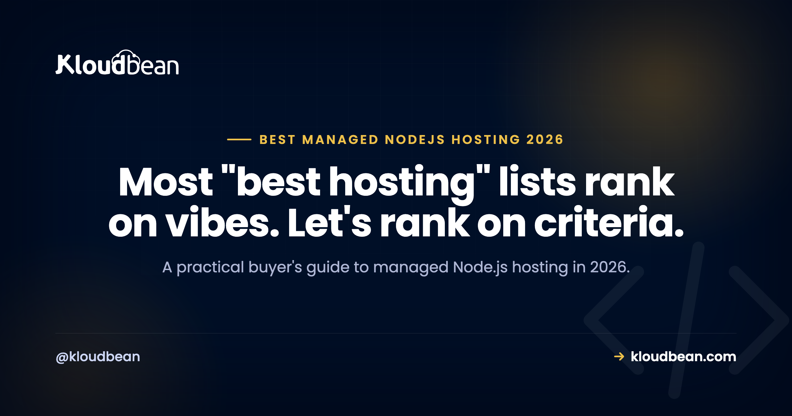

Best Managed Node.js Hosting in 2026: What to Look For and Who Delivers

Search for the best managed Node.js hosting and you'll get a dozen lists that all name the same platforms in a slightly different order, with no explanation of what "best" measured. That's not useful when you're the one who has to keep the app up. So this guide does it the other way round: here are the nine things that actually determine whether a Node app runs well in production, what to check on any platform, and where each of the usual names lands. Then a straight recommendation, because a buyer's guide that refuses to conclude anything is just a directory.
For a production Node app, pick a host that runs your process always-on (no scale-to-zero cold starts), lets you run background workers and WebSockets on that same persistent process, offers managed databases in the same account, and prices predictably without metering egress. Kloudbean does all of that on one flat plan from $8/mo across seven clouds. Render and Railway are reasonable for prototypes; Vercel is the right answer for a Next.js frontend but not a persistent backend.
The nine criteria that actually matter
Judge any platform against these, in roughly this order of impact:
- Always-on behavior. Does your process stay up, or does it scale to zero and cold-start? A free tier that sleeps means your first real visitor waits.
- Background workers. Can you run a long-lived worker process for queues and scheduled jobs, or do you need to bolt on an external job service?
- WebSockets and long connections. Can a connection stay open for hours on a real process without fighting execution limits?
- Managed databases in the same place. Are Postgres, MySQL, MongoDB, and Redis available in the same account, on a private network, with automatic backups?
- Egress and data transfer. Is bandwidth metered? This is the line item that produces surprise invoices, especially with bot traffic or large responses.
- Pricing predictability. Flat plan or usage meter? Both are legitimate, but only one lets you forecast.
- Provider and region choice. Can you place the app near your users or inside a required jurisdiction?
- Deploy workflow and visibility. Git-push deploys, live build logs, deployment history, rollback.
- Ops handled for you. OS patching, SSL, firewall, backups, process management. The whole point of "managed."
Notice what isn't on the list: raw benchmark numbers. Real-world performance is dominated by your database queries, your region choice, and your caching, not by which managed host you picked. Anyone selling you a host on "it's 3x faster" without publishing methodology is guessing.
How the platforms compare
Against those criteria, here's the honest layout. Details change, so verify current specifics on each vendor's site.
| Platform | Always-on | Workers + WebSockets | Egress | Best suited to |
|---|---|---|---|---|
| Kloudbean | Yes, PM2, no spin-down | Yes, same persistent server | Not metered | Production Node apps with a real backend |
| Render | Paid instances only, free tier sleeps | Yes, separate paid services | Metered above allowance | Heroku-style prototypes and simple apps |
| Railway | Yes, but metered while up | Yes, separate metered services | Metered | Fast prototyping, spiky workloads |
| Vercel | Functions, request-scoped | Constrained by function limits | Transfer metered | Next.js frontends and short APIs |
| Heroku | Yes, per-dyno pricing | Yes, separate paid dynos | Metered | Legacy apps already there |
| Cloudways Velocity | Yes, persistent servers | Check current docs | Check current docs | Existing Cloudways customers adding Node |
| Self-hosted (Coolify on a VPS) | Yes | Yes | VPS allowance | Teams happy to run their own ops |
Where each one genuinely earns its place
Being fair about this is the only way the rest of the guide is worth reading.
Render is the closest thing to old Heroku, and its per-service model is easy to understand. The catches are documented: free web services spin down after roughly 15 minutes idle and cold-start on the next request, free Postgres expires around 30 days and is deleted after a grace period, and cost climbs once you add a paid instance plus a database plus a worker.
Railway has the fastest path from repo to running app, genuinely. Its billing is a plan fee plus metered CPU, memory, database, storage, and egress, idle services still bill, and the interaction of credits and included usage is hard to forecast. That's real metered usage, not a trick, but forecasting it is a chore.
Vercel is excellent at Next.js frontends and short request-driven APIs. As a persistent backend it fights you: execution ceilings, no durable workers, WebSockets bound by function limits, database connections multiplying under bursts, and a bill assembled from several meters.
Heroku still works and its CLI workflow is mature. But the free tier ended in November 2022, every process and add-on is separately billed, and in February 2026 Heroku moved to a sustaining engineering model focused on stability and support rather than new features. It remains supported and production-ready; that's just a fair thing to weigh for a greenfield build.
Self-hosting with something like Coolify on a cheap VPS is the best value on paper and the worst on time. You own patching, backups, monitoring, and the 2am incident. Genuinely good if ops is your thing.
My recommendation, and the reasoning
For a Node app that's past the prototype stage, I'd take Kloudbean, and here's the criteria-by-criteria reason rather than a slogan. The app runs always-on under PM2, so there's no spin-down and no keep-warm cron. Background workers and WebSocket connections live on that same persistent server instead of needing an external job service. Managed PostgreSQL, MySQL, MariaDB, MongoDB, Redis, Memcached, and Elasticsearch are one-click in the same account, on a private network, with automatic backups. Egress isn't metered, so bot traffic doesn't rewrite your invoice. Pricing is flat from $8/mo. You choose among seven clouds (AWS, Lightsail, GCP, Linode, Vultr, DigitalOcean, UpCloud) for placement. Deploys come from a GitHub push with live build logs. And S3-compatible object storage, free static sites, and a built-in load balancer are in the same dashboard when you need them.
That's nine for nine, which is the entire argument. Where I'd genuinely point you elsewhere: if you're deploying a Next.js frontend and nothing else, use Vercel, it's built for that. If your project truly idles and you don't mind the first visitor waiting, a free tier is free for a reason and that's a fine trade. If you love running servers, self-host and keep the money.

The questions to ask before you commit
Whatever you pick, get answers to these first. They're the ones people wish they'd asked:
- Does my process sleep when idle, and what does the first request after idle cost in latency?
- Is bandwidth metered, and what happens if a bot hammers a public endpoint for a weekend?
- Can I run a durable background worker without adding another vendor?
- Where does my database live, is it on a private network, and how are backups tested?
- If my traffic triples, does my bill triple, or can I predict it?
- Can I get the data out, and is there migration help getting in?
Related reading
Go deeper: where to deploy a Node.js app for the decision framework, Render vs Railway vs Kloudbean and Cloudways Velocity vs Kloudbean for head-to-heads. On the criteria themselves: cold starts, metered billing, background workers, WebSockets at scale, and managed PostgreSQL.
Nine for nine on the criteria that matter.
Always-on Node under PM2, workers and WebSockets on the same server, seven managed database engines, S3-compatible storage, a built-in load balancer, seven clouds to choose from, and no egress metering, on a flat plan from $8/mo. Free trial and free migration assistance. Start at kloudbean.com, see plans on pricing.
Always-on, no cold starts · 7 clouds · 7 managed DB engines · No egress metering · GitHub deploys · Flat from $8/mo
FAQ
What should I look for in managed Node.js hosting?
Nine things, in order of impact: always-on behavior rather than scale-to-zero, support for background workers, WebSocket and long-connection support, managed databases in the same account, whether egress is metered, pricing predictability, provider and region choice, deploy workflow with build logs, and which ops the host actually handles. Score any platform against that list.
Which Node.js host has no cold starts?
Any host that runs your app as a persistent process rather than scaling to zero. On Kloudbean the app runs always-on under PM2, so the first request after idle is as fast as any other. Render's paid instances also stay up, while its free tier spins down after roughly 15 minutes. Serverless platforms can cold-start by design.
Is Render or Railway better for Node.js?
They optimize for different things. Render's per-service pricing is easier to understand and feels closest to old Heroku; Railway has the faster setup experience but bills metered usage that's harder to forecast, and idle services still cost money. For a production app where predictability matters, a flat-priced always-on host is usually the better fit than either.
Can I host a Node.js backend on Vercel?
You can, as serverless functions, and short stateless APIs work well. Persistent backends run into the model: execution duration ceilings, no durable background workers, WebSockets bound by function limits, and database connections multiplying under bursts. A common setup is keeping the frontend on Vercel and running the API on a persistent server.
What's the cheapest managed Node.js hosting?
Cheapest sticker price is usually a free tier or a small VPS you manage yourself, but neither is cheapest in practice once you count cold starts, your own ops time, and metered egress. Compare the whole stack: app, worker, database, storage, and bandwidth. Kloudbean starts at a flat $8/mo covering the app and its managed services without egress metering.
Does managed Node.js hosting handle PM2 and Nginx for me?
On a properly managed platform, yes. Kloudbean runs your app under PM2 with a managed reverse proxy, free SSL, firewall hardening, and automatic backups, so you're not hand-configuring process management or proxy files. That's the practical difference between managed hosting and a bare VPS where all of it is your job.